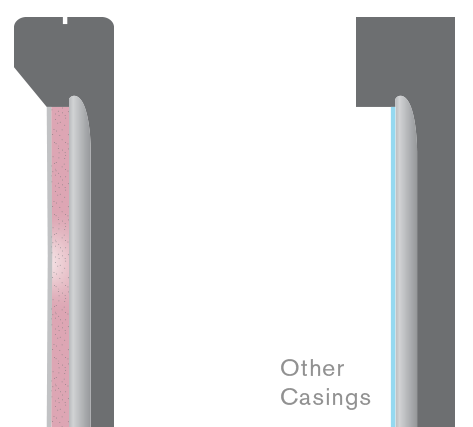

Features
iDive's core enabling technology is the Balance Module that internally pressurizes the casing and retains the spacing between casing membrane and electronic device screen as you go dive deeper.
